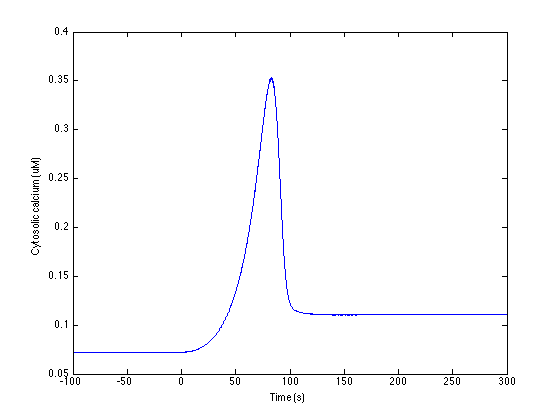

README
Multiscale model of AngII signaling and membrane electrophysiology
We developed a novel multiscale model to bridge neuropeptide
receptor-activated signaling pathway with membrane electrophysiology.
The model studies the effects of Angiotensin II (AngII) on neuronal
excitability changes mediated by signaling dynamics and downstream
phosphorylation of ion channels. The multiscale model was implemented
as a set of ordinary differential equations solved using the ode15s
solver in Matlab (Mathworks, USA). The signaling reactions were
modeled with either mass-action or Michaelis--Menten kinetics and ion
channel electrophysiology was modeled according to the Hodgkin-Huxley
formalism. These models were initially validated against their
respective data domains independently and were integrated to develop a
multiscale model of signaling and electrophysiology.
Model was initially developed by Dirk Fey. Multiple modifications were
made by Hiren Makadia and Warren Anderson. This model was developed at
Dr. Raj Vadigepalli Lab, Daniel Baugh Institute for Functional
Genomics and Computational Biology, Thomas Jefferson University,
Philadelphia PA 19107. This file was written by Hiren Makadia on 8th
Jan 2015.
Reference:
Makadia, H.K., Anderson, W.D., Fey, D., Sauter, T., Schwaber, J.S.,
and Vadigepalli, R. (2015). Multiscale model of dynamic
neuromodulation integrating neuropeptide-induced signaling pathway
activity with membrane electrophysiology. Biophys. J. 108, 211-223.
http://www.ncbi.nlm.nih.gov/pubmed/25564868
List of the files in the folder
|-- freq.m : function to calculate
| : frequency of membrane
| : potential
|-- LoadInitialConditions.m : Initial conditions for all
| : 194 species (see
| : specieslist.xls for details)
|-- LoadParameterswky.m : list of parameters (see
| signaling_network-parameterlist.xls
| : for details)
|-- odemodel.m : odemodel main function file
|-- plot_firingrate.m : function to run simulation
| : and plot firing rate
|-- plot_lowbaseline_Ca_response.m : function to run simulation
| : and plot Ca response
|-- README.txt : this file
|-- signaling_network-parameterlist.xls : Excel file for list of all
| : the parameters and their
| : units
`-- specieslist.xls : Excel file for list of
: species and their initial
: values
Instruction to run key simulations:
Each simulations took around 40 minutes in MATLAB(R) verson R2012b
(8.0.0.783) 64-bit (glnxa64), on computer with Intel(R) Core(TM) i7
CPU Q720 @ 1.60GHz processor.
1. To run simulation for low baseline Calcium condition response
(Figure 2D)
>> plot_Ca_response
produces an image like:

2. To run simulation for high baseline Calcium condition response
(Figure 2F) set the parameter p_18_1 = 36; (line 42 in
LoadParameters.m file) and run
>> plot_Ca_response
3. To run simulation for firing rate for low Ca baseline condition
(Figure S2A, and Figure 4B condition-1)
>> plot_firingrate.m
4. To run simulation for firing rate response for PKC blocking
condition (Figure 4B condition-2) set parameter phosPKC1.k_p = 0;
(line 464 in LoadParameters.m file) and run
>> plot_firingrate.m
5. To run simulation for firing rate response for CaMKII blocking
condition (Figure 4B condition-3) set parameter phosMK1.k_p = 0;
(line 463 in LoadParameters.m file) and run
>> plot_firingrate.m
6. To run simulation for firing rate response for both PKC and CaMKII
blocking condition (Figure 4B condition-4) set parameter
phosPKC1.k_p = 0; and phosMK1.k_p = 0; (line 463 and 464 in
LoadParameters.m file) and run
>> plot_firingrate.m
7. To run simulation for firing rate response for high Calcium
baseline condition (Figure S2A) set the parameter p_18_1 = 36;
(line 42 in LoadParameters.m file) and run
>> plot_firingrate.m